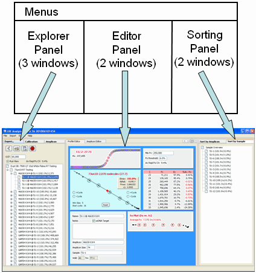

As described in the LRE Databases section, the LRE Analyzer employs three database types for storing sample profiles, calibration profiles and amplicons, respectively. The program is thus designed to display and allow editing of each of theses data types.
The user interface is organized into three panels, each containing windows that provide functions for viewing and/or editing of data:

The Explorer Panel presents data contained in database files using a tree structure.
The Editor Panel allows viewing/editing of data,
The Sorting Panel sorts profiles based on either amplicon or sample